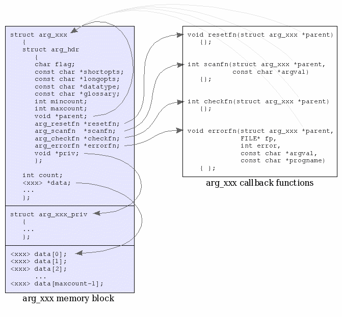

Stewart
Heitmann
sheitmann@users.sourceforge.net
example code: <installdir>/share/doc/argtable2/example/hasoptvalue.c
This topic shows how to use define command line arguments that take optional argument values as in --foo=[<int>]. Consider the following syntax:
Usage: foobar -f <int> -b [<int>] This program demonstrates the use of the argtable2 library -f, --foo=<int> takes an integer value (defaults to 9) -b, --bar=[<int>] takes an optional integer value (defaults to 5)
Notice that the -f argument takes a mandatory argument value (eg: -f4) , whereas the -b argument may or may not be given a value (eg: -b5 or -b are both legal) even though both are defined in the argument table in the same way.
struct arg_int *foo = arg_int1("f","foo", NULL,"takes an integer value (defaults to 9)");
struct arg_int *bar = arg_int1("b","bar", NULL,"takes an optional integer value (defaults to 5)");
struct arg_end *end = arg_end(20);
void* argtable[] = {foo,bar,end};
int nerrors;
To have the -b argument accept optional values we must set the following flag in its argtable hdr structure.
bar->hdr.flag |= ARG_HASOPTVALUE;
Whenever an optional argument value is omitted from the command line the argument is counted as a valid one, though the argument value itself is left unaltered. Hence, any desired default values should be manually assigned prior to parsing.
/* set foo default values to 9 */
for (i=0; i<foo->hdr.maxcount; i++)
foo->ival[i]=9;
/* set bar default values to 5 */
for (i=0; i<bar->hdr.maxcount; i++)
bar->ival[i]=5;
/* Parse the command line as defined by argtable[] */
nerrors = arg_parse(argc,argv,argtable);example code: <installdir>/share/doc/argtable2/example/multisyntax.c
This topic shows how to use argtable to implement a program having multiple alternative command line syntaxes. In this case our example program has four alternate syntaxes as follows:
Usage: multisyntax [-nvR] insert <file> [<file>]... [-o <output>]
multisyntax [-nv] remove <file>
multisyntax [-v] search <pattern> [-o <output>]
multisyntax [--help] [--version]
This program demonstrates the use of the argtable2 library for parsing multiple command line syntaxes.
-n take no action
-v, --verbose verbose messages
-R recurse through subdirectories
<file> input file(s)
-o <output> output file (default is "-")
<pattern> search string
--help print this help and exitA separate argument table is defined for each alternate syntax and each is parsed against the command line in turn. That syntax which returns no errors is taken to be the winner. Should no syntax match the command line then the appropriate error messages are displayed and the program exits. Obviously, you must design your alternate syntaxes to be mutually exclusive, otherwise your program syntax will be ambiguous. Mutual exclusion is achieved in this case by the use of keywords (insert, remove, search) in the command line which uniquely identify each syntax.
Looking at the code, we see that each syntax is defined by its own argument table as follows:
/* SYNTAX 1: insert [-nvR] <file> [file]... -o <file> */
struct arg_rex *cmd1 = arg_rex1(NULL, NULL, "insert", NULL, REG_ICASE, NULL);
struct arg_lit *noact1 = arg_lit0("n", NULL, "take no action");
struct arg_lit *verbose1 = arg_lit0("v", "verbose", "verbose messages");
struct arg_lit *recurse1 = arg_lit0("R", NULL, "recurse through subdirectories");
struct arg_file *infiles1 = arg_filen(NULL,NULL, NULL, 1,argc+2, "input files)");
struct arg_file *outfile1 = arg_file0("o", NULL, "<output>", "output file (default is \"-\")");
struct arg_end *end1 = arg_end(20);
void* argtable1[] = {cmd1,noact1,verbose1,recurse1,infiles1,outfile1,end1};
int nerrors1;
/* SYNTAX 2: remove [-nv] <file> */
struct arg_rex *cmd2 = arg_rex1(NULL, NULL, "remove", NULL, REG_ICASE, NULL);
struct arg_lit *noact2 = arg_lit0("n", NULL, NULL);
struct arg_lit *verbose2 = arg_lit0("v", "verbose", NULL);
struct arg_file *infiles2 = arg_file1(NULL, NULL, NULL, NULL);
struct arg_end *end2 = arg_end(20);
void* argtable2[] = {cmd2,noact2,verbose2,infiles2,end2};
int nerrors2;
/* SYNTAX 3: search [-v] <pattern> [-o <file>] [--help] [--version] */
struct arg_rex *cmd3 = arg_rex1(NULL, NULL, "search", NULL, REG_ICASE, NULL);
struct arg_lit *verbose3 = arg_lit0("v", "verbose", NULL);
struct arg_str *pattern3 = arg_str1(NULL, NULL, "<pattern>", "search string");
struct arg_file *outfile3 = arg_file0("o", NULL, "<output>", NULL);
struct arg_end *end3 = arg_end(20);
void* argtable3[] = {cmd3,verbose3,pattern3,outfile3,end3};
int nerrors3;
/* SYNTAX 4: [-help] [-version] */
struct arg_lit *help4 = arg_lit0(NULL,"help", "print this help and exit");
struct arg_lit *version4 = arg_lit0(NULL,"version", "print version information and exit");
struct arg_end *end4 = arg_end(20);
void* argtable4[] = {help4,version4,end4};
int nerrors4;Notice that the argument tables keep their contents separate from each other. While it may be tempting to share an arg_xxx structure between multiple argument tables, that will not work in this example code since the contents of any shared arg_xxx structure will be repeatedly overwritten when each successive argument table is parsed.
The insert/remove/search keywords are implemented using arg_rex arguments. These are parsed as untagged string arguments that must match a given regular expression: "insert", "remove", and "search" respectively. The REG_ICASE regex flag is also given to allow case insensitive regular expression matching as a nicety. See the argtable programmer's manual for more information of the arg_rex argument type.
Since we have multiple argument tables, you'll need to pre-set any default argument values in every argument table in which the value appears. Here we set the default value of the output filename argument which appears in both the first and third argument tables as struct arg_file *outfile1 and struct arg_file *outfile2 respectively.
/* set any command line default values prior to parsing */ outfile1->filename[0]="-"; outfile3->filename[0]="-";
Having completed the argument tables, the command line is parsed against each argument table in turn and we record the number of errors reported by each.
nerrors1 = arg_parse(argc,argv,argtable1); nerrors2 = arg_parse(argc,argv,argtable2); nerrors3 = arg_parse(argc,argv,argtable3); nerrors4 = arg_parse(argc,argv,argtable4);
If any of these return zero errors then we have detected a successful matching command line and we can pass the argument data from the matching argument table to our program's main processing routine.
if (nerrors1==0)
exitcode = mymain1(noact1->count, verbose1->count, recurse1->count,
outfile1->filename[0], infiles1->filename, infiles1->count);
else if (nerrors2==0)
exitcode = mymain2(noact2->count, verbose2->count, infiles2->filename[0]);
else if (nerrors3==0)
exitcode = mymain3(verbose3->count, pattern3->sval[0], outfile3->filename[0]);
else if (nerrors4==0)
exitcode = mymain4(help4->count, version4->count, progname,
argtable1, argtable2, argtable3, argtable4);Should they all return errors then we must display the appropriate syntax error messages. The trick is knowing which error messages to display. Simply displaying the error messages for each and every syntax will work, but is overkill as it generates a lot of irrelevant messages. A better strategy is to display only those errors related to the syntax that gave the fewest errors on the presumption that the user got it mostly correct. The strategy used in this example however is to utilise the presence of any keywords ("insert", "remove", "search") as markers to indicate which syntax the user intended and only display the errors for that syntax. Remember that the keywords were implemented using arg_rex argument structures (cmd1, cmd2, cmd3) and these will return a count of 0 if the keyword was missing from the command line and 1 otherwise. Thus we can test the presence of each keyword by checking the count value stored in the cmd1, cmd2, and cmd3 structures.
So if the "insert" keyword was given on the command line then we display only those errors associated with the first argument table, namely, the errors stored in struct arg_end *end1.
if (cmd1->count > 0)
{
/* here the cmd1 argument was correct, so presume syntax 1 was intended target */
arg_print_errors(stdout,end1,progname);
printf("usage: %s ", progname);
arg_print_syntax(stdout,argtable1,"\n");
}Likewise for the "remove" and "search" keywords of the second and third argument tables
else if (cmd2->count > 0)
{
/* here the cmd2 argument was correct, so presume syntax 2 was intended target */
arg_print_errors(stdout,end2,progname);
printf("usage: %s ", progname);
arg_print_syntax(stdout,argtable2,"\n");
}
else if (cmd3->count > 0)
{
/* here the cmd3 argument was correct, so presume syntax 3 was intended target */
arg_print_errors(stdout,end3,progname);
printf("usage: %s ", progname);
arg_print_syntax(stdout,argtable3,"\n");
}If none of the keywords were detected we display a message to that effect followed by the full usage description.
else
{
/* no correct cmd literals were given, so we cant presume which syntax was intended */
printf("%s: missing <insert|remove|search> command.\n",progname);
printf("usage 1: %s ", progname); arg_print_syntax(stdout,argtable1,"\n");
printf("usage 2: %s ", progname); arg_print_syntax(stdout,argtable2,"\n");
printf("usage 3: %s ", progname); arg_print_syntax(stdout,argtable3,"\n");
printf("usage 4: %s", progname); arg_print_syntax(stdout,argtable4,"\n");
}Lastly, remember to clean up all the argument tables at program's end.
arg_freetable(argtable1,sizeof(argtable1)/sizeof(argtable1[0])); arg_freetable(argtable2,sizeof(argtable2)/sizeof(argtable2[0])); arg_freetable(argtable3,sizeof(argtable3)/sizeof(argtable3[0])); arg_freetable(argtable4,sizeof(argtable4)/sizeof(argtable4[0]));
example code: <installdir>/share/doc/argtable2/example/callbacks.c
This topic shows how to write your own argtable callback functions for controlling the parsing, validation, and error reporting aspects of the command line parsing. Each arg_xxx struct has four callback routines that get called by the argtable parser. These are buried within the arg_hdr structure that each arg_xxx structure has. Among other things, you can see the relevant function pointers below. They are called resetfn, scanfn, checkfn, and errorfn.
typedef void (arg_resetfn)(void *parent);
typedef int (arg_scanfn)(void *parent, const char *argval);
typedef int (arg_checkfn)(void *parent);
typedef void (arg_errorfn)(void *parent, FILE *fp, int error, const char *argval, const char *progname);
struct arg_hdr
{
char flag;
const char *shortopts;
const char *longopts;
const char *datatype;
const char *glossary;
int mincount;
int maxcount;
void *parent;
arg_resetfn *resetfn;
arg_scanfn *scanfn;
arg_checkfn *checkfn;
arg_errorfn *errorfn;
void *priv;
};These function pointers are always pre-set by the arg_xxx constructor functions to the default routines for that argument type and ordinarily there is no need to change them. However, you may replace them with your own custom routines if you wish. Thus when argtable parses the command line for these particular argument types, it will call your custom callbacks rather than the default routines. However responsibility comes with control, and all callbacks must implement certain features that argtable expects. These are each discussed in turn.
The resetfn of each arg_xxx within an argument table is called once by the parser prior to parsing the command line. This provides the opportunity to initialise the arg_xxx structure prior to parsing and nominally requires resetting the argument count to zero. The parent parameter is actually a pointer to the pertinent arg_xxx structure, and should be cast appropriately. The casting may be done in the function definition as shown in this example for an arg_int struct.
void myresetfn(struct arg_int *parent)
{
parent->count=0;
}The storage space for the parsed argument values should not be initialised since the user may have deliberately set default values that should be retained.
The parser calls an arg_xxx's scanfn routine once for each matching command line argument that needs to be parsed. Its purpose is to extract the argument's data value from the argument string in argval, convert it to the appropriate data type, and store the result in the arg_xxx's data array. It must handle NULL argval as will occur when an argument with optional value is invoked. The function must return zero to indicate success and a non-zero error code otherwise. The error codes may be of your own choosing as they will latter be handled by your own errorfn callback.
enum {EMINCOUNT=1, EMAXCOUNT, EBADINT};
int myscanfn(struct arg_int *parent, const char *argval)
{
int val;
char *end;
/* return EMAXCOUNT if we have exceeded the maximum argument count */
if (parent->count == parent->hdr.maxcount )
return EMAXCOUNT;
/* if argval is NULL then no argument value was given */
/* this will only happen for arguments that allow optional values */
/* in which case we leave the parent data value unaltered and */
/* count this as a valid argument (which it is) */
if (!argval)
{
parent->count++;
return 0;
}
/* extract base10 integer from argval string into val */
/* return EBADINT if conversion failed */
val = (int)strtol(argval,&end,10);
if (*end!=0)
return EBADINT;
/* <perform custom checks here> */
/* store the value in parent's ival[] array and increment the argument count */
parent->ival[parent->count++] = val;
/* return zero to indicate success */
return 0;
}Do not print error messages from within scanfn as the user may wish to delay the error messages until alternative argument tables have been tried. In the meantime the parser will save each returned error code in the argument table's arg_end structure. Latter, the arg_print_errors function will be called to retrieve those error codes from arg_end and pass them onto the errorfn callbacks whose job is to print the appropriate messages.
The checkfn of each arg_xxx within an the argument table is called by the parser once upon completion of command line parsing. It provides the opportunity to perform any post-parse error checks and nominally requires checking the minimum argument count for the arg_xxx structure has been satisfied.
int mycheckfn(struct arg_int *parent)
{
/* return EMINCOUNT if the minimum number of arguments is not present. */
if (parent->count < parent->hdr.mincount)
return EMINCOUNT;
/* <perform custom checks here> */
/* all checks passed */
return 0;
}Like scanfn, it should return zero for success and a user-defined non-zero error code otherwise. These error codes are likewise destined to be passed onto errorfn.
When the users wishes to print the syntax error messages he or she calls the arg_print_errors function which in turn calls the errorfn routine of each arg_xxx for each error that was previously reported. This is where the error messages for the corresponding error codes are printed. The parent pointer refers to the pertinent arg_xxx structure, and FILE* fp designates the output stream onto which the error messages should be printed. The errorcode parameter contains the same value returned by the scanfn or checkfn routine that reported the error, and argval points to the offending command line argument string. The progname parameter is the same one passed to the arg_print_errors function, and is expected to contain the name of the program which is usually prefixed onto the error message by convention. Notice that each arg_xxx need only handle the error codes generated by its own scanfn and checkfn routines.
void myerrorfn(struct arg_int *parent, FILE *fp, int errorcode, const char *argval, const char *progname)
{
/* for convenience */
const char *shortopts = parent->hdr.shortopts;
const char *longopts = parent->hdr.longopts;
const char *datatype = parent->hdr.datatype;
/* make argval NULL safe */
argval = argval ? argval : "";
/* prefix all error messages with the program name */
fprintf(fp,"%s: ",progname);
switch(errorcode)
{
case EMINCOUNT:
fputs("missing option ",fp);
arg_print_option(fp,shortopts,longopts,datatype,"\n");
break;
case EMAXCOUNT:
fputs("excess option ",fp);
arg_print_option(fp,shortopts,longopts,argval,"\n");
break;
case EBADINT:
arg_print_option(fp,shortopts,longopts,argval," is not a valid <int>\n");
break;
/* <add custom error messages here> */
}
}There are no functions for registering callbacks with arg_xxx structures, you simply write the function pointers directly into the arg_xxx structure after it has been constructed.
struct arg_int *val = arg_intn(NULL,NULL,NULL,2,100,"blah blah"); /* replace the default arg_int parser routines with custom routines */ val->hdr.resetfn = (arg_resetfn*)myresetfn; val->hdr.scanfn = (arg_scanfn*)myscanfn; val->hdr.checkfn = (arg_checkfn*)mycheckfn; val->hdr.errorfn = (arg_errorfn*)myerrorfn;
Callbacks are part of the argtable design to make it possible to add new argument data types in future without changing the base argtable source code. Since they exist, they may be exploited by the programmer for finer control of the parsing and error validation but that was never their intended role. It is the authors view that the majority of custom argument checking tasks are better done as a second stage in your program after argtable has done its job. It is usually much simpler to implement additional post-parse checks in your own code than creating custom argtable callbacks that do it all. Custom callbacks are really only required if you are scanning data types that argtable does not support natively. In such cases you may also need to create a custom arg_xxx structure in which to store the results, as is described in the next topic.
example code: <installdir>/share/doc/argtable2/example/argcustom.c, argxxx.c, argxxx.h
This topic shows how to write new argument types for use with the argtable parser. These need not be compiled into the library base code, so you can create custom argument types for specific programs at will. A custom argument type is required if you need to handle a data type that is not supported natively by the argtable library. It involves defining a new arg_xxx structure and writing the callback and constructor functions that go with it. If you merely wish to alter the parsing and validation rules applied to an existing arg_xxx data type then hooking your own custom callbacks into the existing structure as described in the previous topic is more appropriate.
Every arg_xxx struct must have an arg_hdr struct as its first data member. Internally, argtable casts all arg_xxx structures to arg_hdr structures, so it is imperative that arg_hdr be the first data member. Argtable uses the information within it to cast the command line option into the format required by GNU getopt which actually does the parsing.
struct arg_xxx
{
struct arg_hdr hdr; /* The mandatory argtable header struct */
int count; /* Number of matching arguments parsed */
<xxx> *data; /* Array for storing the argument values */
... /* Other custom fields go here */
};Custom data members follow the arg_hdr struct. Since argtable supports multiple instances of any given command line argument, it is usual that your structure provides an array for storing multiple argument values (arg_xxx.data) and a count of them (arg_xxx.count). Add any other fields you need for your custom parsing routines as required. Any internal data you would prefer to hide from the end-user can be stored in a user-defined private data structure that is encapsulated by the arg_hdr structure as you will see next.
struct arg_xxx_priv
{
/* Private custom data goes here */
...
};Each arg_xxx structure should have a constructor function that is responsible for allocating memory for it and populating the data within it. By convention, there are ordinarily three forms of constructor function for each arg_xxx struct
struct arg_xxx* arg_xxx0(const char* shortopts, const char* longopts,
const char *datatype, const char *glossary);
struct arg_xxx* arg_xxx1(const char* shortopts, const char* longopts,
const char *datatype, const char *glossary);
struct arg_xxx* arg_xxxn(const char* shortopts, const char* longopts,
const char *datatype,
int mincount, int maxcount,
const char *glossary);The different forms provide a convenient means for specifying command line arguments that accept either zero-or-one, exactly-one, or many instances on the command line. The first two forms are typically implemented as wrapper functions of the third. You may customise the actual parameters to fit your purposes, the declarations above are merely examples of common forms.

The diagram shows the general layout of the data structure that should be returned by the arg_xxx constructor function(s). It comprises of a single contiguous block of heap allocated memory, with the arg_xxx struct at its head, followed by the storage space for maxcount argument values as well as an optional private data structure that may be used to hide internal data from the end-user. If the allocation failed then the constructor should return NULL.
size_t nbytes; struct arg_xxx *result; nbytes = sizeof(struct arg_xxx) + sizeof(struct arg_xxx_priv) + maxcount*sizeof(<xxx>) ; result = (struct arg_xxx*)malloc(nbytes);
The entire arg_hdr structure must be populated by the constructor, including the pointers to the appropriate callback functions, the enclosing arg_xxx structure (void *parent), and the private data structure (void *priv).
result->hdr.flag = ARG_HASVALUE; /* argument accepts a value */ result->hdr.shortopts = shortopts; /* short options */ result->hdr.longopts = longopts; /* long options */ result->hdr.datatype = datatype ? datatype : "<xxx>"; /* datatype description */ result->hdr.glossary = glossary; /* glossary description */ result->hdr.mincount = mincount; /* minimum number of arguments */ result->hdr.maxcount = maxcount; /* maximum number of arguments */ result->hdr.parent = result; /* ptr to parent arg_xxx struct */ result->hdr.resetfn = (arg_resetfn*)resetfn; /* ptr to resetfn callback */ result->hdr.scanfn = (arg_scanfn*)scanfn; /* ptr to scanfn callback */ result->hdr.checkfn = (arg_checkfn*)checkfn; /* ptr to checkfn callback */ result->hdr.errorfn = (arg_errorfn*)errorfn; /* ptr to errorfn callback */ result->hdr.priv = result + 1; /* ptr to private data */
The custom arg_xxx fields should also be populated, particularly the pointer to the argument storage array. The values within the array may or may not be initialised at your discretion.
/* locate the data[maxcount] array immediately after the private data structure */ result->data = (<xxx>*)((struct arg_xxx_priv*)(result->hdr.priv) + 1); /* init the remaining of the arg_xxx struct variables */ result->count = 0; ...
Lastly, we return a pointer to the completed data structure
return result;